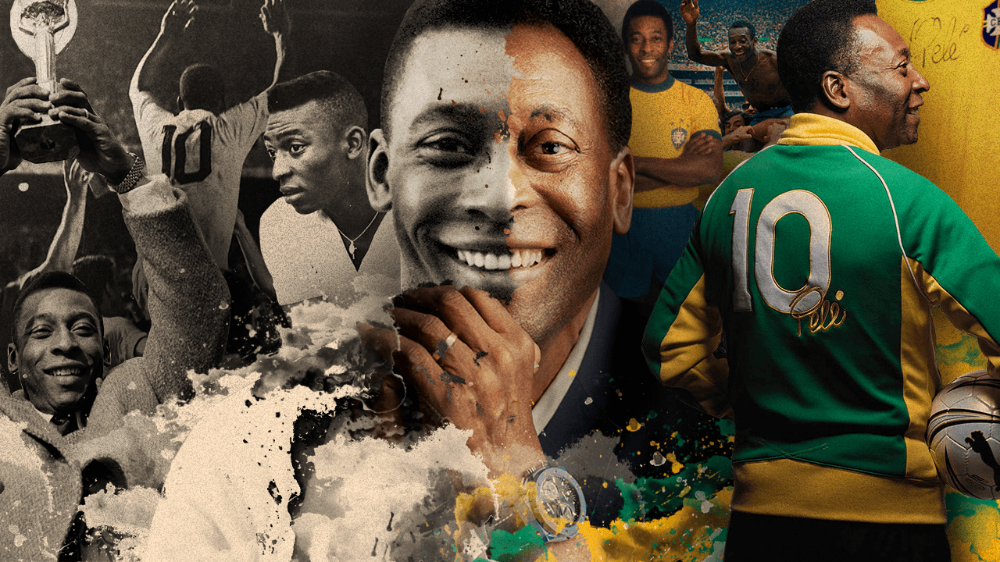

Pelé
Edson Arantes do Nascimento, o rei do futebol

Pelé retratado em glórias que permeiam a história do futebol
Principais feitos em sua carreira:
- 1940 - Pelé nasce neste dia na região de Três Corações, em Minas-Gerais
- 1956 - Em sua estŕeia pelo Santos FC, marcou 2 gols
- 1957 - Assinou seu primeiro contrato profissional no Santos FC
- 1957 - Estriou na Seleção Brasileira marcando um gol contra a Argentina
- 1958 - Pelé sagra-se campeão do Mundo pelo Brasil, marcou dois dos cinco gols
- 1959 - Alistou-se e jogou pelas Forças Armadas brasileiras
- 1961 - Pelé marca o famoso ‘gol de placa’ no Maracanã.
- 1962 - Pelé vence o segundo Mundial pelo Brasil, no Chile
- 1962 - Com o Santos, vence o Mundial de Clubes frente ao Benfica, de Eusébio
- 1963 - Pelé e o Santos vencem novamente o Mundial de Clubes frente ao AC Milan, de Maldini
- 1969 - Pelé marca o milésimo gol da carreira (oficiais e não oficiais). Aconteceu frente ao Vasco da Gama, no Maracanã
- 1970 - Pelé vence o Mundial com a Seleção brasileira pela terceira vez
- 1972 - Faz a milésima partida pelo Santos, frente ao Ceará
- 1974 - Pelé faz a última partida pelo Santos. Aconteceu frente ao Ponte Preta
- 1975 - Pelé estreiou no New York Cosmos
- 1977 - Pelé aposentou-se do futebol em jogo frente ao Santos FC, jogando um tempo por cada time
- 2022 - Pelé faleceu em São Paulo, deixando um legado imortal
Caso queira conhecer melhor a história do Rei do Futebol, visite essa página da Wikipedia